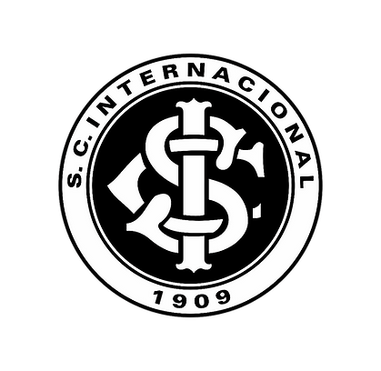

Nasci dia 8 de abril de 2008, no melhor dia da minha vida.
Desde que nasceu em 27 de dezembro de 2014, meu irmão mudou a minha vida e foi para melhor. Às vezes brigamos, na verdade, quase todo dia, mas independente disso, amo e sempre amarei ele. Passo boa parte do meu tempo livre com ele, sempre brincando e rindo.

É impossível falar sobre a minha vida e não falar do meu time, o Inter. Fui ensinado desde o dia que nasci a torcer e amar esse time, inclusive fui até batizado no gigante da Beira Rio, sempre fui ao estádio apoiar e cantar e tenho muitas histórias dentro do Beira Rio. A mais engraçada delas aconteceu 2019, era a final da copa do Brasil e antes da partida iniciar eu quebrei o braço, cai de uma barra que tinha aproximadamente 1 metro de altura.
Entrei na escola bem pequeno, primeiro na creche, onde fiz amizades que duram até hoje, depois disso em 2013 entrei no Doroteia e estou aqui até hoje.
Nos dias de hoje eu estou escrevendo essa biografia.